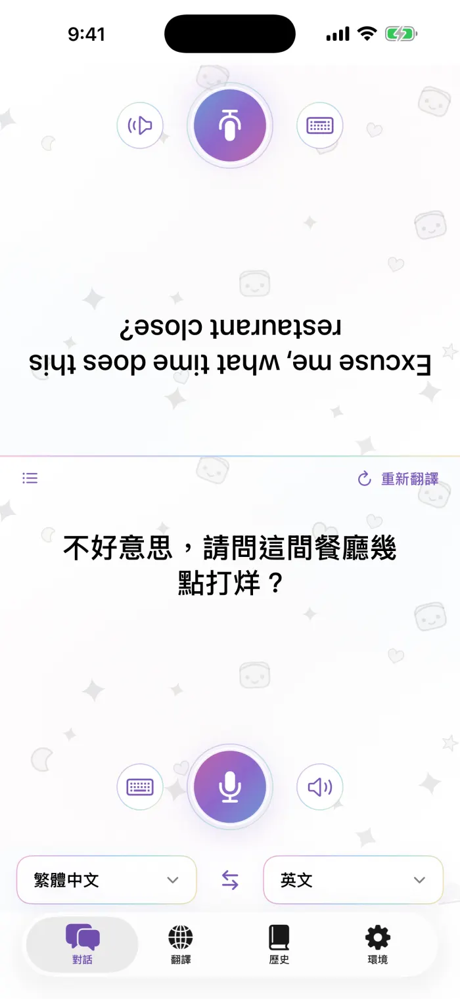
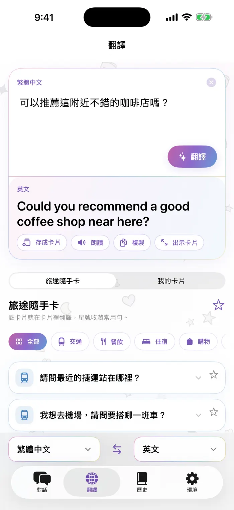
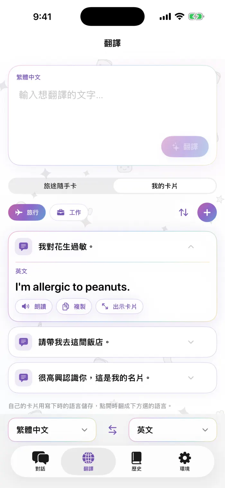
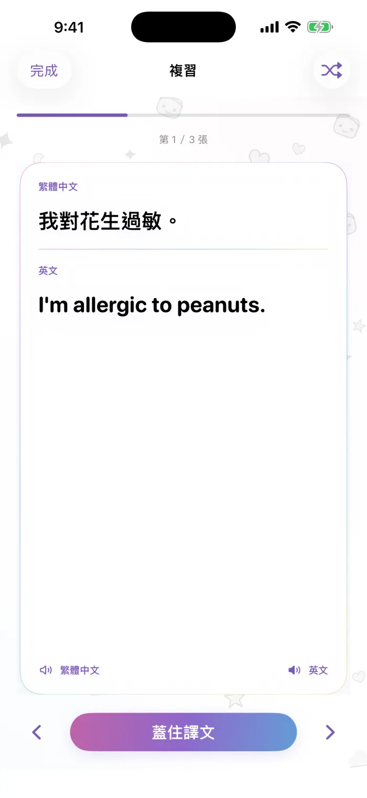

支援
翻譯蒟蒻的常見問題。這裡找不到答案的話，歡迎寫信給我們，每封都會看。
常見問題
怎麼下載語言？
打開 App 的「設定」分頁，進入「離線語言」。已在 iPhone 上的語言會排在最前面；在需要的語言組合旁點「下載」，再依 Apple 的下載提示完成。如果翻譯時提示需要先下載，點「下載並重試」即可。
沒有網路能用嗎？
可以。語言組合的兩種語言都下載好之後，不需要網路就能翻譯。網路只用來下載語言。
App 聽不到我說話怎麼辦？
翻譯蒟蒻需要「麥克風」和「語音辨識」權限。請到「設定」>「隱私權與安全性」>「麥克風」，以及「設定」>「隱私權與安全性」>「語音辨識」，把翻譯蒟蒻打開。有些語言在部分裝置上只能打字、不支援語音辨識。
翻譯沒有唸出來，或沒有聲音？
iPhone 需要該語言的語音。請到「設定」>「輔助使用」>「語音內容」>「聲音」，選擇語言並下載語音。也請確認靜音開關和音量。
換新 iPhone 後怎麼恢復購買？
用同一個 Apple 帳號登入，打開 App 裡的 Pro 畫面，點「恢復購買」。
怎麼取消訂閱？
訂閱由 Apple 管理。到「設定」，點你的名字，再點「訂閱項目」，選擇翻譯蒟蒻後點「取消訂閱」。目前這一期結束前仍可使用 Pro。
免費可以做幾張自訂卡片？
免費版可以做 3 張自訂卡片。Pro 沒有數量限制，卡片和卡組想做多少都可以。內建的旅途小卡一直免費。
支援哪些語言？
約 20 種語言，也就是 Apple 支援裝置端翻譯的語言。已下載的語言會排在清單最前面。
為什麼有廣告？怎麼拿掉？
免費版會在畫面上方顯示一條小橫幅（對話頁只放在你這一側，不會出現在轉給對方看的那半邊）。購買任何一種 Pro 方案就不再顯示廣告。你說的和翻譯的內容不會用在廣告上。
我的翻譯紀錄在哪？
翻過的內容都存在你的 iPhone 上。瀏覽、搜尋和翻卡複習紀錄屬於 Pro 功能；升級後，之前翻過的全部都看得到。
翻譯蒟蒻的使用受 Apple 標準終端使用者授權合約（EULA）規範。 https://www.apple.com/legal/internet-services/itunes/dev/stdeula/
介面說明
App 的實際畫面，數字對應旁邊的說明。

對話
- 對方那一側，倒過來給坐對面的人讀
- 按麥克風說話
- 改用打字
- 再播一次譯文
- 選兩邊的語言，中間箭頭交換方向
- 換了語言後重新翻譯上一句
- 切換成一般列表

翻譯
- 輸入想說的話
- 翻譯
- 譯文
- 存成卡片、朗讀、複製、放大出示
- 切換旅途隨手卡與我的卡片

我的卡片
- 卡片組：旅行、工作，也能自己新增
- 整理：拖曳排序、刪除、改名
- 新增卡片
- 點卡片，譯文直接出現在卡片裡

複習
- 原文
- 譯文，點一下才顯示
- 顯示或蓋住譯文
- 上一張／下一張（也可以左右滑）
- 隨機順序